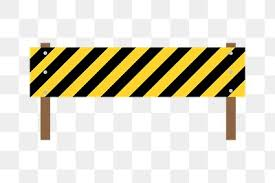

VGDC Project
My group has decided to coninue with the project we started last quarter and are going to refine the game and add more to the game. I will continue my work as Game Designer to help design new mechanics and flesh out current mechanics. I will work closey with all other deparments (art, writin, ui/ux, programing, audio) and answer all the questions they have and help them with desiging their part of the game.
Looking for volunteer oppurtunities
As Co-Outreach Coordinator for MAES (Latinos in Science and engineering) I am looking to bring more volunteer oppurtunities to our general members. Currently trying to find oppurntuies on campus or nearby. Also working on bringing back a special MAES event to UCI, the Science Extravaganza, which is where many high schoolers come to UCI for a day to learn about Sceince and Engineering by doing fun experiments and activities. Check out our instagram @maesuci which is our main form of communication.
Current classwork
I am currently in the winter quarter of school and I am taking 6 classes for 22 units. This quarter I am taking 3 courses related to my major of software engineering, 2 Game Design and Interactive Media classes (as I attempt to double major), and I am taking concert choir which is open to all uci students. I am taking CS 161 (design and analysis of algorithms), CS 143A (principles of operating systems), IN4MATX 133 (user interaction software), GDIM 25 (game design fundamentals), GDIM 53 (roleplaying and improvisational play). I am exceited for all these classes because all these topics are intersing to me, but I know I have a lot of work ahead of me with all of them. But I handles a similar course load last quarter so I am confient I will be okay.